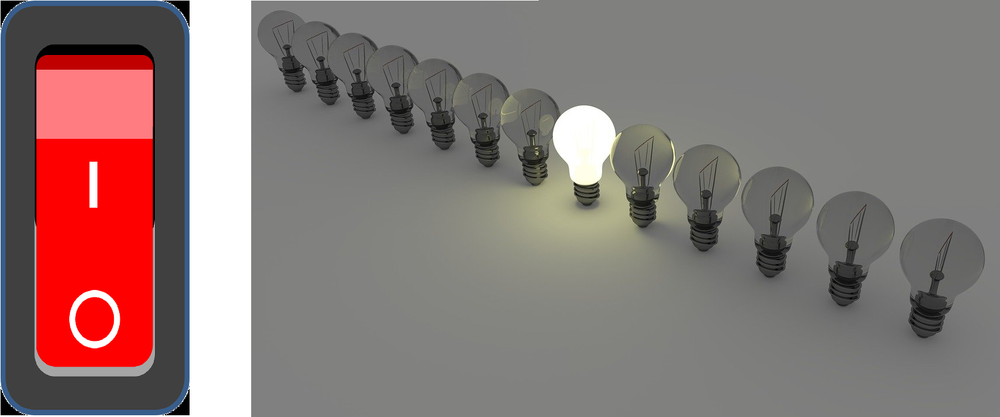

<!DOCTYPE html>
<html xmlns="http://www.w3.org/1999/xhtml" lang="sr-Cyrl"></html>
  <head>
    <meta charset="utf-8" />
    <meta name="viewport" content="width=device-width, initial-scale=1.0" />
    <title>Представљање података у рачунару &#8212; 1_razred_IKT_DigitalnaPismenost</title>
    <link rel="stylesheet" href="../_static/pygments.css" type="text/css" />
    <link rel="stylesheet" href="../_static/basic.css" type="text/css" />
    <link rel="stylesheet" type="text/css" href="../_static/activecode.css" />
    <link rel="stylesheet" type="text/css" href="../_static/codemirror.css" />
    <link rel="stylesheet" type="text/css" href="../_static/clickable.css" />
    <link rel="stylesheet" type="text/css" href="../_static/pytutor.css" />
    <link rel="stylesheet" type="text/css" href="../_static/modal-basic.css" />
    <link rel="stylesheet" type="text/css" href="../_static/datafile.css" />
    <link rel="stylesheet" type="text/css" href="../_static/dragndrop.css" />
    <link rel="stylesheet" type="text/css" href="../_static/fitb.css" />
    <link rel="stylesheet" type="text/css" href="../_static/matrixeq.css" />
    <link rel="stylesheet" type="text/css" href="../_static/parsons.css" />
    <link rel="stylesheet" type="text/css" href="../_static/lib/prettify.css" />
    <link rel="stylesheet" type="text/css" href="../_static/poll.css" />
    <link rel="stylesheet" type="text/css" href="../_static/showEval.css" />
    <link rel="stylesheet" type="text/css" href="../_static/tabbedstuff.css" />
    <link rel="stylesheet" type="text/css" href="https://stackpath.bootstrapcdn.com/bootstrap/4.2.1/css/bootstrap.min.css" />
    <link rel="stylesheet" type="text/css" href="../_static/video.css" />
    <link rel="stylesheet" type="text/css" href="../_static/webgldemo.css" />
    <link rel="stylesheet" type="text/css" href="../_static/webglinteractive.css" />
    <link rel="stylesheet" type="text/css" href="../_static/karel.css" />
    <link rel="stylesheet" type="text/css" href="../_static/notes.css" />
    <link rel="stylesheet" href="../_static/user-highlights.css" type="text/css" />
    <link rel="stylesheet" href="https://use.fontawesome.com/releases/v5.1.1/css/all.css" type="text/css" />
    <link rel="stylesheet" href="../_static/bootstrap-4.0.0-dist/css/bootstrap.min.css" type="text/css" />
    <link rel="stylesheet" href="../_static/flatly.min.css" type="text/css" />
    <link rel="stylesheet" href="../_static/petlja.css" type="text/css" />
    <script id="documentation_options" data-url_root="../" src="../_static/documentation_options.js"></script>
    <script type="text/javascript" src="../_static/runestonebase.js"></script>
    <script type="text/javascript" src="../_static/jquery.js"></script>
    <script type="text/javascript" src="../_static/underscore.js"></script>
    <script type="text/javascript" src="../_static/doctools.js"></script>
    <script type="text/javascript" src="../_static/language_data.js"></script>
    <script type="text/javascript" src="../_static/jquery.highlight.js"></script>
    <script type="text/javascript" src="../_static/bookfuncs.js"></script>
    <script type="text/javascript" src="../_static/codemirror.js"></script>
    <script type="text/javascript" src="../_static/xml.js"></script>
    <script type="text/javascript" src="../_static/css.js"></script>
    <script type="text/javascript" src="../_static/python.js"></script>
    <script type="text/javascript" src="../_static/htmlmixed.js"></script>
    <script type="text/javascript" src="../_static/javascript.js"></script>
    <script type="text/javascript" src="../_static/jquery_i18n/CLDRPluralRuleParser.js"></script>
    <script type="text/javascript" src="../_static/jquery_i18n/jquery.i18n.js"></script>
    <script type="text/javascript" src="../_static/jquery_i18n/jquery.i18n.messagestore.js"></script>
    <script type="text/javascript" src="../_static/jquery_i18n/jquery.i18n.fallbacks.js"></script>
    <script type="text/javascript" src="../_static/jquery_i18n/jquery.i18n.language.js"></script>
    <script type="text/javascript" src="../_static/jquery_i18n/jquery.i18n.parser.js"></script>
    <script type="text/javascript" src="../_static/jquery_i18n/jquery.i18n.emitter.js"></script>
    <script type="text/javascript" src="../_static/jquery_i18n/jquery.i18n.emitter.bidi.js"></script>
    <script type="text/javascript" src="../_static/activecode-i18n.en.js"></script>
    <script type="text/javascript" src="../_static/skulpt.min.js"></script>
    <script type="text/javascript" src="../_static/skulpt-stdlib.js"></script>
    <script type="text/javascript" src="../_static/activecode.js"></script>
    <script type="text/javascript" src="../_static/clike.js"></script>
    <script type="text/javascript" src="../_static/timed_activecode.js"></script>
    <script type="text/javascript" src="../_static/animationbase.js"></script>
    <script type="text/javascript" src="../_static/mchoice.js"></script>
    <script type="text/javascript" src="../_static/timedmc.js"></script>
    <script type="text/javascript" src="../_static/timed.js"></script>
    <script type="text/javascript" src="../_static/mchoice-i18n.en.js"></script>
    <script type="text/javascript" src="../_static/clickable.js"></script>
    <script type="text/javascript" src="../_static/timedclickable.js"></script>
    <script type="text/javascript" src="../_static/d3.v2.min.js"></script>
    <script type="text/javascript" src="../_static/jquery.ba-bbq.min.js"></script>
    <script type="text/javascript" src="../_static/jquery.jsPlumb-1.3.10-all-min.js"></script>
    <script type="text/javascript" src="../_static/pytutor.js"></script>
    <script type="text/javascript" src="../_static/codelens.js"></script>
    <script type="text/javascript" src="../_static/datafile.js"></script>
    <script type="text/javascript" src="../_static/dragndrop.js"></script>
    <script type="text/javascript" src="../_static/timeddnd.js"></script>
    <script type="text/javascript" src="../_static/dragndrop-i18n.en.js"></script>
    <script type="text/javascript" src="../_static/fitb.js"></script>
    <script type="text/javascript" src="../_static/timedfitb.js"></script>
    <script type="text/javascript" src="../_static/fitb-i18n.en.js"></script>
    <script type="text/javascript" src="../_static/matrixeq.js"></script>
    <script type="text/javascript" src="../_static/lib/prettify.js"></script>
    <script type="text/javascript" src="../_static/lib/hammer.min.js"></script>
    <script type="text/javascript" src="../_static/parsons.js"></script>
    <script type="text/javascript" src="../_static/parsons-i18n.en.js"></script>
    <script type="text/javascript" src="../_static/timedparsons.js"></script>
    <script type="text/javascript" src="../_static/poll.js"></script>
    <script type="text/javascript" src="../_static/reveal.js"></script>
    <script type="text/javascript" src="../_static/shortanswer.js"></script>
    <script type="text/javascript" src="../_static/timed_shortanswer.js"></script>
    <script type="text/javascript" src="../_static/showEval.js"></script>
    <script type="text/javascript" src="../_static/tabbedstuff.js"></script>
    <script type="text/javascript" src="../_static/runestonevideo.js"></script>
    <script type="text/javascript" src="../_static/webglinteractive.js"></script>
    <script type="text/javascript" src="../_static/FileSaver.min.js"></script>
    <script type="text/javascript" src="../_static/Blob.js"></script>
    <script type="text/javascript" src="../_static/karelCorner.js"></script>
    <script type="text/javascript" src="../_static/karelRobot.js"></script>
    <script type="text/javascript" src="../_static/karelWorld.js"></script>
    <script type="text/javascript" src="../_static/karelRobotDrawer.js"></script>
    <script type="text/javascript" src="../_static/karelUI.js"></script>
    <script type="text/javascript" src="../_static/karel.js"></script>
    <script type="text/javascript" src="../_static/karel-i18n.en.js"></script>
    <script type="text/javascript" src="../_static/notes.js"></script>
    <script type="text/javascript" src="../_static/pygamelib-init.js"></script>
    <script type="text/javascript" src="../_static/blockly/blockly_compressed.js"></script>
    <script type="text/javascript" src="../_static/blockly/blocks_compressed.js"></script>
    <script type="text/javascript" src="../_static/blockly/python_compressed.js"></script>
    <script type="text/javascript" src="../_static/blockly/msg-sr.js"></script>
    <script type="text/javascript" src="../_static/blockpy/utilities.js"></script>
    <script type="text/javascript" src="../_static/blockpy/python_errors.js"></script>
    <script type="text/javascript" src="../_static/blockpy/ast_node_visitor.js"></script>
    <script type="text/javascript" src="../_static/blockpy/abstract_interpreter.js"></script>
    <script type="text/javascript" src="../_static/blockpy/pytifa.js"></script>
    <script type="text/javascript" src="../_static/blockpy/abstract_interpreter_definitions.js"></script>
    <script type="text/javascript" src="../_static/blockpy/python_to_blockly.js"></script>
    <script type="text/javascript" src="../_static/blockpy/imported.js"></script>
    <script type="text/javascript" src="../_static/blockpy/blocks/class.js"></script>
    <script type="text/javascript" src="../_static/blockpy/blocks/comment.js"></script>
    <script type="text/javascript" src="../_static/blockpy/blocks/comprehensions.js"></script>
    <script type="text/javascript" src="../_static/blockpy/blocks/dict.js"></script>
    <script type="text/javascript" src="../_static/blockpy/blocks/if.js"></script>
    <script type="text/javascript" src="../_static/blockpy/blocks/io.js"></script>
    <script type="text/javascript" src="../_static/blockpy/blocks/lists.js"></script>
    <script type="text/javascript" src="../_static/blockpy/blocks/sets.js"></script>
    <script type="text/javascript" src="../_static/blockpy/blocks/loops.js"></script>
    <script type="text/javascript" src="../_static/blockpy/blocks/parking.js"></script>
    <script type="text/javascript" src="../_static/blockpy/blocks/tuple.js"></script>
    <script type="text/javascript" src="../_static/blockpy/blocks/turtles.js"></script>
    <script type="text/javascript" src="../_static/blockpy/blocks/text.js"></script>
    <script type="text/javascript" src="../_static/blockpy-modal.js"></script>
    <script type="text/javascript" src="../_static/translations.js"></script>
    <script async="async" type="text/javascript" src="https://cdnjs.cloudflare.com/ajax/libs/mathjax/2.7.5/latest.js?config=TeX-AMS-MML_HTMLorMML"></script>
    <script type="text/javascript" src="../_static/mchoice-i18n.sr-Cyrl.js"></script>
    <script type="text/javascript" src="../_static/mchoice-i18n.sr.js"></script>
    <script type="text/javascript" src="../_static/mchoice-i18n.sr-Latn.js"></script>
    <script type="text/javascript" src="../_static/dragndrop-i18n.sr-Cyrl.js"></script>
    <script type="text/javascript" src="../_static/dragndrop-i18n.sr.js"></script>
    <script type="text/javascript" src="../_static/dragndrop-i18n.sr-Latn.js"></script>
    <script type="text/javascript" src="../_static/fitb-i18n.sr-Cyrl.js"></script>
    <script type="text/javascript" src="../_static/fitb-i18n.sr.js"></script>
    <script type="text/javascript" src="../_static/fitb-i18n.sr-Latn.js"></script>
    <script type="text/javascript" src="../_static/parsons-i18n.sr-Cyrl.js"></script>
    <script type="text/javascript" src="../_static/parsons-i18n.sr.js"></script>
    <script type="text/javascript" src="../_static/parsons-i18n.sr-Latn.js"></script>
    <script type="text/javascript" src="../_static/activecode-i18n.sr-Cyrl.js"></script>
    <script type="text/javascript" src="../_static/activecode-i18n.sr.js"></script>
    <script type="text/javascript" src="../_static/activecode-i18n.sr-Latn.js"></script>
    <script type="text/javascript" src="../_static/jquery-ui-1.10.3.custom.min.js"></script>
    <script type="text/javascript" src="../_static/jquery-fix.js"></script>
    <script type="text/javascript" src="../_static/bootstrap-4.0.0-dist/js/bootstrap.min.js"></script>
    <script type="text/javascript" src="../_static/bootstrap-4.0.0-dist/js/bootstrap.bundle.min.js"></script>
    <script type="text/javascript" src="../_static/bootstrap-sphinx.js"></script>
    <script type="text/javascript" src="../_static/waypoints.min.js"></script>
    <script type="text/javascript" src="../_static/rangy-core.js"></script>
    <script type="text/javascript" src="../_static/rangy-textrange.js"></script>
    <script type="text/javascript" src="../_static/rangy-cssclassapplier.js"></script>
    <script type="text/javascript" src="../_static/user-highlights.js"></script>
    <script type="text/javascript" src="../_static/jquery.idle-timer.js"></script>
    <script type="text/javascript" src="../_static/processing-1.4.1.min.js"></script>
    <script type="text/javascript" src="../_static/jquery.hotkey.js"></script>
    <script type="text/javascript" src="../_static/jquery-migrate-1.2.1.min.js"></script>
    <script type="text/javascript" src="../_static/course-errors.js"></script>
    <script type="text/javascript" src="../_static/petlja.js"></script>
    <link rel="index" title="Index" href="../genindex.html" />
    <link rel="search" title="Search" href="../search.html" />
    <link rel="next" title="Квиз 2.1" href="zkviz_6.html" />
    <link rel="prev" title="Како раде рачунари?" href="kako_rade_računari_lekcija_6.html" />
<meta charset='utf-8'>
<meta http-equiv='X-UA-Compatible' content='IE=edge,chrome=1'>
<meta content='width=device-width, initial-scale=1.0, maximum-scale=1.0, user-scalable=0' name='viewport' />
<link rel="shortcut icon" href="../_static/favicon.ico" type="image/ico" />
<script type="text/javascript">
  eBookConfig = {};
  eBookConfig.host = 'http://127.0.0.1:8000' ? 'http://127.0.0.1:8000' : 'http://127.0.0.1:8000';
  eBookConfig.app = eBookConfig.host + '/runestone';
  eBookConfig.ajaxURL = eBookConfig.app + '/ajax/';
  eBookConfig.course = '1_razred_IKT_DigitalnaPismenost';
  eBookConfig.logLevel = '0';
  eBookConfig.loginRequired = 'false';
  eBookConfig.build_info = "";
  eBookConfig.isLoggedIn = false;
  eBookConfig.useRunestoneServices = 'false';
  eBookConfig.python3 = 'true';
  eBookConfig.basecourse = 'Primer_kurs';
  eBookConfig.runestone_version = '';
  eBookConfig.imagesDir = '../_images/';
  eBookConfig.staticDir = '../_static/';
  if (typeof (Sk) != "undefined")
    Sk.imgPath = eBookConfig.imagesDir;
</script>

<div id="fb-root"></div>


  </head><body>


<!-- Begin navbar -->

<nav id="navbar" class="navbar navbar-default navbar-fixed-top" role="navigation">

  <a href="https://petlja.org"> </a>
  <a href="https://petlja.org/net.kabinet"> </a>
  <div class="container">

    <div class="navbar-header">
      <button type="button" class="navbar-toggle collapsed" data-toggle="collapse"
        data-target="#bs-example-navbar-collapse-1">
        <span class="sr-only">Toggle navigation</span>
        <span class="icon-bar"></span>
        <span class="icon-bar"></span>
        <span class="icon-bar"></span>
      </button>
    </div>

    <div class="collapse navbar-collapse" id="bs-example-navbar-collapse-1"
      style="margin-left: 25px; text-align: center;">
      <ul class="nav navbar-nav">
        <li class="active"><a
            href="../">1_razred_IKT_DigitalnaPismenost</a>
        </li>
      </ul>
    </div>
  </div>
</nav>

<div style="margin-top: 65px;font-size: 20px; width: 20%; float: left; height: calc(100vh - 115px);">
  
      <div class="sphinxsidebar" role="navigation" aria-label="main navigation">
        <div class="sphinxsidebarwrapper"><ul>
    
    <div class="lecture-div" id=lecture-аУвод>
        <i class="fas fa-caret-right caret-position"></i>
        <i class="fas fa-caret-down caret-position d-none"></i>
        <h5>Увод</h5>
    </div>

    <div class="d-none">
        
        
        <a href=../аУвод/uvodni_tekst.html>
        
        <div class="activity-div" id=activity-uvodni_tekst>
            
            <i class="fas fa-file-alt activity-icon"></i>
            
            Увод у курс
        </div>
    </a>
    

    </diV>
    
    <div class="lecture-div" id=lecture-Тема1>
        <i class="fas fa-caret-right caret-position"></i>
        <i class="fas fa-caret-down caret-position d-none"></i>
        <h5>1. Информационо - комуникационе технологије у савременом друштву</h5>
    </div>

    <div class="d-none">
        
        
        <a href=../Тема1/tekst_tema_1.html>
        
        <div class="activity-div" id=activity-tekst_tema_1>
            
            <i class="fas fa-file-alt activity-icon"></i>
            
            Садржај теме 1
        </div>
    </a>
    

    </diV>
    
    <div class="lecture-div" id=lecture-Лекција1>
        <i class="fas fa-caret-right caret-position"></i>
        <i class="fas fa-caret-down caret-position d-none"></i>
        <h5>1.1 Информационо-комуникационе технологије</h5>
    </div>

    <div class="d-none">
        
        
        <a href=../Лекција1/uvod_lekcija_1.html>
        
        <div class="activity-div" id=activity-uvod_lekcija_1>
            
            <i class="fas fa-file-alt activity-icon"></i>
            
            Садржај лекције 1.1
        </div>
    </a>
    
        
        <a href=../Лекција1/IKT_lekcija_1.html>
        
        <div class="activity-div" id=activity-IKT_lekcija_1>
            
            <i class="fas fa-file-alt activity-icon"></i>
            
            1.1 ИКТ у савременом друштву
        </div>
    </a>
    
        
        <a href=../Лекција1/zkviz_1.html>
        
        <div class="activity-div" id=activity-zkviz_1>
            
            <i class="far fa-question-circle activity-icon"></i>
            
            Квиз 1.1
        </div>
    </a>
    

    </diV>
    
    <div class="lecture-div" id=lecture-Лекција2>
        <i class="fas fa-caret-right caret-position"></i>
        <i class="fas fa-caret-down caret-position d-none"></i>
        <h5>1.2 Рачунарске мреже и интернет</h5>
    </div>

    <div class="d-none">
        
        
        <a href=../Лекција2/uvod_lekcija_2.html>
        
        <div class="activity-div" id=activity-uvod_lekcija_2>
            
            <i class="fas fa-file-alt activity-icon"></i>
            
            Садржај лекције 1.2
        </div>
    </a>
    
        
        <a href=../Лекција2/mreze_lekcija_2.html>
        
        <div class="activity-div" id=activity-mreze_lekcija_2>
            
            <i class="fas fa-file-alt activity-icon"></i>
            
            Рачунарске мреже и интернет
        </div>
    </a>
    
        
        <a href=../Лекција2/zkviz_2.html>
        
        <div class="activity-div" id=activity-zkviz_2>
            
            <i class="far fa-question-circle activity-icon"></i>
            
            Квиз 1.2
        </div>
    </a>
    

    </diV>
    
    <div class="lecture-div" id=lecture-Лекција3>
        <i class="fas fa-caret-right caret-position"></i>
        <i class="fas fa-caret-down caret-position d-none"></i>
        <h5>1.3 Коришћење интернета</h5>
    </div>

    <div class="d-none">
        
        
        <a href=../Лекција3/uvod_lekcija_3.html>
        
        <div class="activity-div" id=activity-uvod_lekcija_3>
            
            <i class="fas fa-file-alt activity-icon"></i>
            
            Садржај лекције 1.3
        </div>
    </a>
    
        
        <a href=../Лекција3/internet_servisi_lekcija_3.html>
        
        <div class="activity-div" id=activity-internet_servisi_lekcija_3>
            
            <i class="fas fa-file-alt activity-icon"></i>
            
            Интернет сервиси
        </div>
    </a>
    
        
        <a href=../Лекција3/komunikacija_na_internetu_lekcija_3.html>
        
        <div class="activity-div" id=activity-komunikacija_na_internetu_lekcija_3>
            
            <i class="fas fa-file-alt activity-icon"></i>
            
            Начини и правила комуникације и лепог понашања на интернету
        </div>
    </a>
    
        
        <a href=../Лекција3/zkviz_3.html>
        
        <div class="activity-div" id=activity-zkviz_3>
            
            <i class="far fa-question-circle activity-icon"></i>
            
            Квиз 1.3
        </div>
    </a>
    

    </diV>
    
    <div class="lecture-div" id=lecture-Лекција4>
        <i class="fas fa-caret-right caret-position"></i>
        <i class="fas fa-caret-down caret-position d-none"></i>
        <h5>1.4 Ауторска права, веродостојност информација, заштита и безбедност</h5>
    </div>

    <div class="d-none">
        
        
        <a href=../Лекција4/uvod_lekcija_4.html>
        
        <div class="activity-div" id=activity-uvod_lekcija_4>
            
            <i class="fas fa-file-alt activity-icon"></i>
            
            Садржај лекције 1.4
        </div>
    </a>
    
        
        <a href=../Лекција4/prava_verodostojnost_lekcija_4.html>
        
        <div class="activity-div" id=activity-prava_verodostojnost_lekcija_4>
            
            <i class="fas fa-file-alt activity-icon"></i>
            
            Ауторска права и веродостојност информација
        </div>
    </a>
    
        
        <a href=../Лекција4/zastita_bezbednost_lekcija_4.html>
        
        <div class="activity-div" id=activity-zastita_bezbednost_lekcija_4>
            
            <i class="fas fa-file-alt activity-icon"></i>
            
            Заштита личних података и приватност
        </div>
    </a>
    
        
        <a href=../Лекција4/uticaji_lekcija_4.html>
        
        <div class="activity-div" id=activity-uticaji_lekcija_4>
            
            <i class="fas fa-file-alt activity-icon"></i>
            
            Утицаји ИКТ на здравље и околину
        </div>
    </a>
    
        
        <a href=../Лекција4/sve_boje_lekcija_4.html>
        
        <div class="activity-div" id=activity-sve_boje_lekcija_4>
            
            <i class="fas fa-file-alt activity-icon"></i>
            
            Све боје интернета
        </div>
    </a>
    
        
        <a href=../Лекција4/zkviz_4.html>
        
        <div class="activity-div" id=activity-zkviz_4>
            
            <i class="far fa-question-circle activity-icon"></i>
            
            Квиз 1.4
        </div>
    </a>
    

    </diV>
    
    <div class="lecture-div" id=lecture-Лекција5>
        <i class="fas fa-caret-right caret-position"></i>
        <i class="fas fa-caret-down caret-position d-none"></i>
        <h5>1.5 Развој ИКТ</h5>
    </div>

    <div class="d-none">
        
        
        <a href=../Лекција5/uvod_lekcija_5.html>
        
        <div class="activity-div" id=activity-uvod_lekcija_5>
            
            <i class="fas fa-file-alt activity-icon"></i>
            
            Садржај лекције 1.5
        </div>
    </a>
    
        
        <a href=../Лекција5/istorijski_razvoj_lekcija_5.html>
        
        <div class="activity-div" id=activity-istorijski_razvoj_lekcija_5>
            
            <i class="fas fa-file-alt activity-icon"></i>
            
            Историјски развој ИКТ
        </div>
    </a>
    
        
        <a href=../Лекција5/generacije_elektronskih_lekcija_5.html>
        
        <div class="activity-div" id=activity-generacije_elektronskih_lekcija_5>
            
            <i class="fas fa-file-alt activity-icon"></i>
            
            Генерације електронских рачунара
        </div>
    </a>
    
        
        <a href=../Лекција5/zkviz_5.html>
        
        <div class="activity-div" id=activity-zkviz_5>
            
            <i class="far fa-question-circle activity-icon"></i>
            
            Квиз 1.5
        </div>
    </a>
    

    </diV>
    
    <div class="lecture-div" id=lecture-Тема2>
        <i class="fas fa-caret-right caret-position"></i>
        <i class="fas fa-caret-down caret-position d-none"></i>
        <h5>2. Рачунарство</h5>
    </div>

    <div class="d-none">
        
        
        <a href=../Тема2/tekst_tema_2.html>
        
        <div class="activity-div" id=activity-tekst_tema_2>
            
            <i class="fas fa-file-alt activity-icon"></i>
            
            Садржај теме 2
        </div>
    </a>
    

    </diV>
    
    <div class="lecture-div" id=lecture-Лекција6>
        <i class="fas fa-caret-right caret-position"></i>
        <i class="fas fa-caret-down caret-position d-none"></i>
        <h5>2.1 Принципи рада рачунара</h5>
    </div>

    <div class="d-none">
        
        
        <a href=../Лекција6/uvod_lekcija_6.html>
        
        <div class="activity-div" id=activity-uvod_lekcija_6>
            
            <i class="fas fa-file-alt activity-icon"></i>
            
            Садржај лекције 2.1
        </div>
    </a>
    
        
        <a href=../Лекција6/kako_rade_računari_lekcija_6.html>
        
        <div class="activity-div" id=activity-kako_rade_računari_lekcija_6>
            
            <i class="fas fa-file-alt activity-icon"></i>
            
            Како раде рачунари
        </div>
    </a>
    
        
        <a href=../Лекција6/predstavljanje_podataka_lekcija_6.html>
        
        <div class="activity-div" id=activity-predstavljanje_podataka_lekcija_6>
            
            <i class="fas fa-file-alt activity-icon"></i>
            
            Представљање података у рачунару
        </div>
    </a>
    
        
        <a href=../Лекција6/zkviz_6.html>
        
        <div class="activity-div" id=activity-zkviz_6>
            
            <i class="far fa-question-circle activity-icon"></i>
            
            Квиз 2.1
        </div>
    </a>
    

    </diV>
    
    <div class="lecture-div" id=lecture-Лекција7>
        <i class="fas fa-caret-right caret-position"></i>
        <i class="fas fa-caret-down caret-position d-none"></i>
        <h5>2.2 Представљање бројева и рачунање са различитим основама</h5>
    </div>

    <div class="d-none">
        
        
        <a href=../Лекција7/uvod_lekcija_7.html>
        
        <div class="activity-div" id=activity-uvod_lekcija_7>
            
            <i class="fas fa-file-alt activity-icon"></i>
            
            Садржај лекције 2.2
        </div>
    </a>
    
        
        <a href=../Лекција7/predstavljanje_racunanje_lekcija_7.html>
        
        <div class="activity-div" id=activity-predstavljanje_racunanje_lekcija_7>
            
            <i class="fas fa-file-alt activity-icon"></i>
            
            Представљање бројева и рачунање са различитим основама
        </div>
    </a>
    
        
        <a href=../Лекција7/zkviz_7.html>
        
        <div class="activity-div" id=activity-zkviz_7>
            
            <i class="far fa-question-circle activity-icon"></i>
            
            Квиз 2.2
        </div>
    </a>
    

    </diV>
    
    <div class="lecture-div" id=lecture-Лекција8>
        <i class="fas fa-caret-right caret-position"></i>
        <i class="fas fa-caret-down caret-position d-none"></i>
        <h5>2.3 Хардверске компоненте рачунарских система</h5>
    </div>

    <div class="d-none">
        
        
        <a href=../Лекција8/uvod_lekcija_8.html>
        
        <div class="activity-div" id=activity-uvod_lekcija_8>
            
            <i class="fas fa-file-alt activity-icon"></i>
            
            Садржај лекције 2.3
        </div>
    </a>
    
        
        <a href=../Лекција8/hardver_lekcija_8.html>
        
        <div class="activity-div" id=activity-hardver_lekcija_8>
            
            <i class="fas fa-file-alt activity-icon"></i>
            
            Хардвер
        </div>
    </a>
    
        
        <a href=../Лекција8/zkviz_8.html>
        
        <div class="activity-div" id=activity-zkviz_8>
            
            <i class="far fa-question-circle activity-icon"></i>
            
            Квиз 2.3
        </div>
    </a>
    

    </diV>
    
    <div class="lecture-div" id=lecture-Лекција9>
        <i class="fas fa-caret-right caret-position"></i>
        <i class="fas fa-caret-down caret-position d-none"></i>
        <h5>2.4 Софтверске компоненте рачунарских система</h5>
    </div>

    <div class="d-none">
        
        
        <a href=../Лекција9/uvod_lekcija_9.html>
        
        <div class="activity-div" id=activity-uvod_lekcija_9>
            
            <i class="fas fa-file-alt activity-icon"></i>
            
            Садржај лекције 2.4
        </div>
    </a>
    
        
        <a href=../Лекција9/softver_lekcija_9.html>
        
        <div class="activity-div" id=activity-softver_lekcija_9>
            
            <i class="fas fa-file-alt activity-icon"></i>
            
            Софтвер
        </div>
    </a>
    
        
        <a href=../Лекција9/zkviz_9.html>
        
        <div class="activity-div" id=activity-zkviz_9>
            
            <i class="far fa-question-circle activity-icon"></i>
            
            Квиз 2.4
        </div>
    </a>
    

    </diV>
    
    <div class="lecture-div" id=lecture-Тема3>
        <i class="fas fa-caret-right caret-position"></i>
        <i class="fas fa-caret-down caret-position d-none"></i>
        <h5>3. Организација података и прилагођавање радног окружења</h5>
    </div>

    <div class="d-none">
        
        
        <a href=../Тема3/tekst_tema_3.html>
        
        <div class="activity-div" id=activity-tekst_tema_3>
            
            <i class="fas fa-file-alt activity-icon"></i>
            
            Садржај теме 3
        </div>
    </a>
    

    </diV>
    
    <div class="lecture-div" id=lecture-Лекција10>
        <i class="fas fa-caret-right caret-position"></i>
        <i class="fas fa-caret-down caret-position d-none"></i>
        <h5>3.1 Графички кориснички интерфејс</h5>
    </div>

    <div class="d-none">
        
        
        <a href=../Лекција10/uvod_lekcija_10.html>
        
        <div class="activity-div" id=activity-uvod_lekcija_10>
            
            <i class="fas fa-file-alt activity-icon"></i>
            
            Садржај лекције 3.1
        </div>
    </a>
    
        
        <a href=../Лекција10/gki_lekcija_10.html>
        
        <div class="activity-div" id=activity-gki_lekcija_10>
            
            <i class="fas fa-file-alt activity-icon"></i>
            
            Графички кориснички интерфејс - основни елементи
        </div>
    </a>
    
        
        <a href=../Лекција10/gki_podešavanja_lekcija_10.html>
        
        <div class="activity-div" id=activity-gki_podešavanja_lekcija_10>
            
            <i class="fas fa-file-alt activity-icon"></i>
            
            Графички кориснички интерфејс - основна подешавања
        </div>
    </a>
    
        
        <a href=../Лекција10/zkviz_10.html>
        
        <div class="activity-div" id=activity-zkviz_10>
            
            <i class="far fa-question-circle activity-icon"></i>
            
            Квиз 3.1
        </div>
    </a>
    

    </diV>
    
    <div class="lecture-div" id=lecture-Лекција11>
        <i class="fas fa-caret-right caret-position"></i>
        <i class="fas fa-caret-down caret-position d-none"></i>
        <h5>3.2 Рад са документима и системом датотека</h5>
    </div>

    <div class="d-none">
        
        
        <a href=../Лекција11/uvod_lekcija_11.html>
        
        <div class="activity-div" id=activity-uvod_lekcija_11>
            
            <i class="fas fa-file-alt activity-icon"></i>
            
            Садржај лекције 3.2
        </div>
    </a>
    
        
        <a href=../Лекција11/dokumenti_lekcija_11.html>
        
        <div class="activity-div" id=activity-dokumenti_lekcija_11>
            
            <i class="fas fa-file-alt activity-icon"></i>
            
            Рад са документима и системом датотека
        </div>
    </a>
    
        
        <a href=../Лекција11/zkviz_11.html>
        
        <div class="activity-div" id=activity-zkviz_11>
            
            <i class="far fa-question-circle activity-icon"></i>
            
            Квиз 3.2
        </div>
    </a>
    

    </diV>
    
    <div class="lecture-div" id=lecture-Лекција12>
        <i class="fas fa-caret-right caret-position"></i>
        <i class="fas fa-caret-down caret-position d-none"></i>
        <h5>3.3 Архивирање, слање, чување, заштита.</h5>
    </div>

    <div class="d-none">
        
        
        <a href=../Лекција12/uvod_lekcija_12.html>
        
        <div class="activity-div" id=activity-uvod_lekcija_12>
            
            <i class="fas fa-file-alt activity-icon"></i>
            
            Садржај лекције 3.3
        </div>
    </a>
    
        
        <a href=../Лекција12/arhiviranje_slanje_lekcija_12.html>
        
        <div class="activity-div" id=activity-arhiviranje_slanje_lekcija_12>
            
            <i class="fas fa-file-alt activity-icon"></i>
            
            Архивирање, слање и чување датотека.
        </div>
    </a>
    
        
        <a href=../Лекција12/dokumenti_oblak_lekcija_12.html>
        
        <div class="activity-div" id=activity-dokumenti_oblak_lekcija_12>
            
            <i class="fas fa-file-alt activity-icon"></i>
            
            Рад са документима и системом датотека „у облаку”
        </div>
    </a>
    
        
        <a href=../Лекција12/zastita_lekcija_12.html>
        
        <div class="activity-div" id=activity-zastita_lekcija_12>
            
            <i class="fas fa-file-alt activity-icon"></i>
            
            Средства и методе заштите рачунара и информација
        </div>
    </a>
    
        
        <a href=../Лекција12/zkviz_12.html>
        
        <div class="activity-div" id=activity-zkviz_12>
            
            <i class="far fa-question-circle activity-icon"></i>
            
            Квиз 3.3
        </div>
    </a>
    

    </diV>
    
    <div class="lecture-div" id=lecture-Тема4>
        <i class="fas fa-caret-right caret-position"></i>
        <i class="fas fa-caret-down caret-position d-none"></i>
        <h5>4. Креирање и уређевање дигиталних докумената</h5>
    </div>

    <div class="d-none">
        
        
        <a href=../Тема4/tekst_tema_4.html>
        
        <div class="activity-div" id=activity-tekst_tema_4>
            
            <i class="fas fa-file-alt activity-icon"></i>
            
            Садржај теме 4
        </div>
    </a>
    

    </diV>
    
    <div class="lecture-div" id=lecture-ЛекцијаW1>
        <i class="fas fa-caret-right caret-position"></i>
        <i class="fas fa-caret-down caret-position d-none"></i>
        <h5>4.1 Креирање, уређивање и форматирање дигиталних текстова</h5>
    </div>

    <div class="d-none">
        
        
        <a href=../ЛекцијаW1/uvod_lekcija_w1.html>
        
        <div class="activity-div" id=activity-uvod_lekcija_w1>
            
            <i class="fas fa-file-alt activity-icon"></i>
            
            Садржај лекције 4.1
        </div>
    </a>
    
        
        <a href=../ЛекцијаW1/tekst_lekcija_w1.html>
        
        <div class="activity-div" id=activity-tekst_lekcija_w1>
            
            <i class="fas fa-file-alt activity-icon"></i>
            
            Креирање, уређивање и форматирање дигиталних текстова
        </div>
    </a>
    
        
        <a href=../ЛекцијаW1/zkviz_w1.html>
        
        <div class="activity-div" id=activity-zkviz_w1>
            
            <i class="fas fa-file-alt activity-icon"></i>
            
            Задаци 4.1
        </div>
    </a>
    

    </diV>
    
    <div class="lecture-div" id=lecture-ЛекцијаW2>
        <i class="fas fa-caret-right caret-position"></i>
        <i class="fas fa-caret-down caret-position d-none"></i>
        <h5>4.2 Форматирање параграфа</h5>
    </div>

    <div class="d-none">
        
        
        <a href=../ЛекцијаW2/uvod_lekcija_w2.html>
        
        <div class="activity-div" id=activity-uvod_lekcija_w2>
            
            <i class="fas fa-file-alt activity-icon"></i>
            
            Садржај лекције 4.2
        </div>
    </a>
    
        
        <a href=../ЛекцијаW2/tekst_lekcija_w2.html>
        
        <div class="activity-div" id=activity-tekst_lekcija_w2>
            
            <i class="fas fa-file-alt activity-icon"></i>
            
            Форматирање параграфа
        </div>
    </a>
    
        
        <a href=../ЛекцијаW2/zkviz_w2.html>
        
        <div class="activity-div" id=activity-zkviz_w2>
            
            <i class="fas fa-file-alt activity-icon"></i>
            
            Задаци 4.2
        </div>
    </a>
    

    </diV>
    
    <div class="lecture-div" id=lecture-ЛекцијаW3>
        <i class="fas fa-caret-right caret-position"></i>
        <i class="fas fa-caret-down caret-position d-none"></i>
        <h5>4.3 Посебни елементи у тексту</h5>
    </div>

    <div class="d-none">
        
        
        <a href=../ЛекцијаW3/uvod_lekcija_w3.html>
        
        <div class="activity-div" id=activity-uvod_lekcija_w3>
            
            <i class="fas fa-file-alt activity-icon"></i>
            
            Садржај лекције 4.3
        </div>
    </a>
    
        
        <a href=../ЛекцијаW3/tekst_lekcija_slike_w3.html>
        
        <div class="activity-div" id=activity-tekst_lekcija_slike_w3>
            
            <i class="fas fa-file-alt activity-icon"></i>
            
            Уметање слика и облика
        </div>
    </a>
    
        
        <a href=../ЛекцијаW3/tekst_lekcija_tabele_w3.html>
        
        <div class="activity-div" id=activity-tekst_lekcija_tabele_w3>
            
            <i class="fas fa-file-alt activity-icon"></i>
            
            Уметање табела
        </div>
    </a>
    
        
        <a href=../ЛекцијаW3/tekst_lekcija_formule_w3.html>
        
        <div class="activity-div" id=activity-tekst_lekcija_formule_w3>
            
            <i class="fas fa-file-alt activity-icon"></i>
            
            Уметање симбола и формула
        </div>
    </a>
    
        
        <a href=../ЛекцијаW3/zkviz_w3.html>
        
        <div class="activity-div" id=activity-zkviz_w3>
            
            <i class="fas fa-file-alt activity-icon"></i>
            
            Задаци 4.3
        </div>
    </a>
    

    </diV>
    
    <div class="lecture-div" id=lecture-ЛекцијаW4>
        <i class="fas fa-caret-right caret-position"></i>
        <i class="fas fa-caret-down caret-position d-none"></i>
        <h5>4.4 Логичка структура текстуалног документа</h5>
    </div>

    <div class="d-none">
        
        
        <a href=../ЛекцијаW4/uvod_lekcija_w4.html>
        
        <div class="activity-div" id=activity-uvod_lekcija_w4>
            
            <i class="fas fa-file-alt activity-icon"></i>
            
            Садржај лекције 4.4
        </div>
    </a>
    
        
        <a href=../ЛекцијаW4/tekst_lekcija_w4.html>
        
        <div class="activity-div" id=activity-tekst_lekcija_w4>
            
            <i class="fas fa-file-alt activity-icon"></i>
            
            Логичка структура текстуалног документа
        </div>
    </a>
    
        
        <a href=../ЛекцијаW4/zkviz_w4.html>
        
        <div class="activity-div" id=activity-zkviz_w4>
            
            <i class="fas fa-file-alt activity-icon"></i>
            
            Задаци 4.4
        </div>
    </a>
    

    </diV>
    
    <div class="lecture-div" id=lecture-ЛекцијаW5>
        <i class="fas fa-caret-right caret-position"></i>
        <i class="fas fa-caret-down caret-position d-none"></i>
        <h5>4.5 Обликовање документа, штампање</h5>
    </div>

    <div class="d-none">
        
        
        <a href=../ЛекцијаW5/uvod_lekcija_w5.html>
        
        <div class="activity-div" id=activity-uvod_lekcija_w5>
            
            <i class="fas fa-file-alt activity-icon"></i>
            
            Садржај лекције 4.5
        </div>
    </a>
    
        
        <a href=../ЛекцијаW5/tekst_lekcija_w5.html>
        
        <div class="activity-div" id=activity-tekst_lekcija_w5>
            
            <i class="fas fa-file-alt activity-icon"></i>
            
            Обликовање документа, штампање
        </div>
    </a>
    
        
        <a href=../ЛекцијаW5/zkviz_w5.html>
        
        <div class="activity-div" id=activity-zkviz_w5>
            
            <i class="fas fa-file-alt activity-icon"></i>
            
            Задаци 4.5
        </div>
    </a>
    

    </diV>
    
    <div class="lecture-div" id=lecture-ЛекцијаW6>
        <i class="fas fa-caret-right caret-position"></i>
        <i class="fas fa-caret-down caret-position d-none"></i>
        <h5>4.6 Рад у дељеном текстуалном документу</h5>
    </div>

    <div class="d-none">
        
        
        <a href=../ЛекцијаW6/uvod_lekcija_w6.html>
        
        <div class="activity-div" id=activity-uvod_lekcija_w6>
            
            <i class="fas fa-file-alt activity-icon"></i>
            
            Садржај лекције 4.6
        </div>
    </a>
    
        
        <a href=../ЛекцијаW6/tekst_lekcija_w6.html>
        
        <div class="activity-div" id=activity-tekst_lekcija_w6>
            
            <i class="fas fa-file-alt activity-icon"></i>
            
            Рад у дељеном текстуалном документу
        </div>
    </a>
    
        
        <a href=../ЛекцијаW6/zkviz_w6.html>
        
        <div class="activity-div" id=activity-zkviz_w6>
            
            <i class="fas fa-file-alt activity-icon"></i>
            
            Задаци 4.6
        </div>
    </a>
    

    </diV>
    
    <div class="lecture-div" id=lecture-ЛекцијаW7>
        <i class="fas fa-caret-right caret-position"></i>
        <i class="fas fa-caret-down caret-position d-none"></i>
        <h5>4.7 Слајд - презентације у дељеном документу</h5>
    </div>

    <div class="d-none">
        
        
        <a href=../ЛекцијаW7/uvod_lekcija_w7.html>
        
        <div class="activity-div" id=activity-uvod_lekcija_w7>
            
            <i class="fas fa-file-alt activity-icon"></i>
            
            Садржај лекције 4.7
        </div>
    </a>
    
        
        <a href=../ЛекцијаW7/tekst_lekcija_w7.html>
        
        <div class="activity-div" id=activity-tekst_lekcija_w7>
            
            <i class="fas fa-file-alt activity-icon"></i>
            
            Слајд - презентације у дељеном документу
        </div>
    </a>
    
        
        <a href=../ЛекцијаW7/zkviz_w7.html>
        
        <div class="activity-div" id=activity-zkviz_w7>
            
            <i class="fas fa-file-alt activity-icon"></i>
            
            Задаци 4.7
        </div>
    </a>
    

    </diV>
    
    <div class="lecture-div" id=lecture-ЛекцијаW8>
        <i class="fas fa-caret-right caret-position"></i>
        <i class="fas fa-caret-down caret-position d-none"></i>
        <h5>4.8 Израда слајд презентације у Пауерпоинту</h5>
    </div>

    <div class="d-none">
        
        
        <a href=../ЛекцијаW8/uvod_lekcija_w8.html>
        
        <div class="activity-div" id=activity-uvod_lekcija_w8>
            
            <i class="fas fa-file-alt activity-icon"></i>
            
            Садржај лекције 4.8
        </div>
    </a>
    
        
        <a href=../ЛекцијаW8/podsećanje_lekcija_w8.html>
        
        <div class="activity-div" id=activity-podsećanje_lekcija_w8>
            
            <i class="fas fa-file-alt activity-icon"></i>
            
            Рад у Пауерпоинту - подсетник
        </div>
    </a>
    
        
        <a href=../ЛекцијаW8/tekst_lekcija_w8.html>
        
        <div class="activity-div" id=activity-tekst_lekcija_w8>
            
            <i class="fas fa-file-alt activity-icon"></i>
            
            Презентације и њихова примена
        </div>
    </a>
    
        
        <a href=../ЛекцијаW8/zkviz_w8.html>
        
        <div class="activity-div" id=activity-zkviz_w8>
            
            <i class="fas fa-file-alt activity-icon"></i>
            
            Задаци 4.8
        </div>
    </a>
    

    </diV>
    
    <div class="lecture-div" id=lecture-ЛекцијаW9>
        <i class="fas fa-caret-right caret-position"></i>
        <i class="fas fa-caret-down caret-position d-none"></i>
        <h5>4.9 Напредне технике израде слајд презентација</h5>
    </div>

    <div class="d-none">
        
        
        <a href=../ЛекцијаW9/uvod_lekcija_w9.html>
        
        <div class="activity-div" id=activity-uvod_lekcija_w9>
            
            <i class="fas fa-file-alt activity-icon"></i>
            
            Садржај лекције 4.9
        </div>
    </a>
    
        
        <a href=../ЛекцијаW9/tekst_lekcija_w9.html>
        
        <div class="activity-div" id=activity-tekst_lekcija_w9>
            
            <i class="fas fa-file-alt activity-icon"></i>
            
            Напредне технике израде слајд презентација
        </div>
    </a>
    
        
        <a href=../ЛекцијаW9/zkviz_w9.html>
        
        <div class="activity-div" id=activity-zkviz_w9>
            
            <i class="fas fa-file-alt activity-icon"></i>
            
            Задаци 4.9
        </div>
    </a>
    

    </diV>
    
    <div class="lecture-div" id=lecture-ЛекцијаW10>
        <i class="fas fa-caret-right caret-position"></i>
        <i class="fas fa-caret-down caret-position d-none"></i>
        <h5>4.10 Уређивање текста применом нотација за обележавање</h5>
    </div>

    <div class="d-none">
        
        
        <a href=../ЛекцијаW10/uvod_lekcija_w10.html>
        
        <div class="activity-div" id=activity-uvod_lekcija_w10>
            
            <i class="fas fa-file-alt activity-icon"></i>
            
            Садржај лекције 4.10
        </div>
    </a>
    
        
        <a href=../ЛекцијаW10/tekst_lekcija_w10.html>
        
        <div class="activity-div" id=activity-tekst_lekcija_w10>
            
            <i class="fas fa-file-alt activity-icon"></i>
            
            Уређивање текста применом нотација за обележавање
        </div>
    </a>
    
        
        <a href=../ЛекцијаW10/html_lekcija_w10.html>
        
        <div class="activity-div" id=activity-html_lekcija_w10>
            
            <i class="fas fa-file-alt activity-icon"></i>
            
            HTML
        </div>
    </a>
    
        
        <a href=../ЛекцијаW10/mark_lekcija_w10.html>
        
        <div class="activity-div" id=activity-mark_lekcija_w10>
            
            <i class="fas fa-file-alt activity-icon"></i>
            
            Markdown
        </div>
    </a>
    
        
        <a href=../ЛекцијаW10/wiki_lekcija_w10.html>
        
        <div class="activity-div" id=activity-wiki_lekcija_w10>
            
            <i class="fas fa-file-alt activity-icon"></i>
            
            Wiki
        </div>
    </a>
    
        
        <a href=../ЛекцијаW10/zkviz_w10.html>
        
        <div class="activity-div" id=activity-zkviz_w10>
            
            <i class="fas fa-file-alt activity-icon"></i>
            
            Задаци 4.10
        </div>
    </a>
    

    </diV>
    
</ul>
        </div>
      </div>

</div>

<div class="container col-md-12" id="continue-reading"></div>
<div class="container" id="main-content" style="float: left;  padding-left: 20px; height: calc(100vh - 115px);">
<div id="errors">

</div>


  
  <div class="section" id="id1">
<h1>Представљање података у рачунару<a class="headerlink" href="#id1" title="Permalink to this headline">¶</a></h1>
<div class="line-block">
<div class="line"><br /></div>
</div>
<p>У својој унутрашњости, рачунари се састоје од електричних кола. Они обрађују електричне сигнале који заправо представљају нуле и јединице. Све унутар рачунара записано је помоћу нула и јединица, које се преносе као импулси кроз жице и електрична кола.
Кроз једну жицу може да има и нема сигнала, што практично значи да се може пренети информација „тачно” или „нетачно,  „да” или „не”,  „0” или „1” односно „укључено” или „искључено”. Наведене вредности могу се посматрати као бројеви бинарног бројног система.  То је бројни систем који има само две цифре, углавном их означавамо са „0” и „1”.</p>
<p><strong>Једна нула или јединица је један бит информације. И само име је добио по томе: бит - BInary digiT, бинарна цифра (0 или 1) - то је основна јединица за мерење количине података.</strong></p>

    <div class="course-box course-box-special">
        <div class="course-content">
            <h4 class="carbox-title">
                
            </h4>
            <p>
<p>Колико различитих података може да се кодира са два бита?</p>

    </p></div></div>

    <div data-component="reveal" id="dvabita"   data-showtitle="Размисли па погледај одговор" data-hidetitle="Сакриј прозор">
    <a class="reference internal image-reference" href="../_images/6_dva_bita.png"></a>
<p>Дакле, одговор је - четири различита податка, које можемо представити бројевима 0, 1, 2 и 3.</p>

    </div>
    <p>Слично као у претходном примеру, са три жице, количина података се повећава на 8: 000, 001, 010, 011, 100, 101, 110, 111.</p>
<p>Ако гледамо на тај начин, са две „жице” можемо да пренесемо бројеве 0, 1, 2 и 3, а са три жице бројеве 0, 1, 2, 3, 4, 5, 6, 7. Тако са 8 жица можемо представити и пренети бројеве из интервала 0 до 255. са 16 жица бројеве од 0 до 65535 итд.</p>
<p>Ако је један бит основна, најмања, јединица за мерење „количине” података, које су веће јединице?</p>
<p>У декадном систему, сваки следећи „ред величине” добија се множењем са 10. На сваких 1000 обично додајемо префикс (или „ново” име), па тако имамо:</p>
<p>грам, килограм, тона</p>
<p>милиметар, метар, километар</p>
<p>У бинарном систему је то мало другачије.</p>
<p><strong>Најпре, низ од 8 битова називамо бајт. У једном бајту може да се запише 256 различитих бројева:</strong></p>
<a class="reference internal image-reference" href="../_images/6_bajt.png"></a>
<p><strong>Бајт је најмања јединица количине података која може да се адресира у рачунару. Ознака је B.</strong></p>
<p>Овде „кило”, није <span class="math notranslate nohighlight">\(10^3\)</span>  већ <span class="math notranslate nohighlight">\(2^{10}\)</span> па је 1kB = 2^{10}B = 1024B</p>
<p>Ево још неких редова величине:</p>
<a class="reference internal image-reference" href="../_images/6_kilobit.png"></a>
<p>Сваки следећи је 1024 пута већи од претходног.</p>
<p>Покушај да се сетиш у којим ситуацијама користиш ове мерне јединице?</p>

    <div data-component="reveal" id="kilo"   data-showtitle="Помоћ" data-hidetitle="Сакриј прозор">
    
    <div class="course-box course-box-info">
        <div class="course-content">
            <p>
<p>Када желиш да пошаљеш некоме слику, или да нешто снимиш на флеш-меморију, када се договараш са родитељима колики диск да се набави за рачунар или колико је „велики” филм који желиш да преузмеш на свој рачунар.
Погледај колики је капацитет хард-диска на рачунару за којим сада читаш ову лекцију. Погледај колика је фотографија снимљена телефоном или колико меморије заузима неки текст који имаш снимљен на рачунару.</p>

    </p></div></div>

    </div>
    
    <div class="course-box course-box-special">
        <div class="course-content">
            <h4 class="carbox-title">
                
            </h4>
            <p>
<p>Упореди по величини неколико текстуалних датотека, слика, аудио и видео записа. У којим јединицама се типично изражавају величине ових датотека (одговори за сваки тип датотеке посебно)?</p>
<p>У којим јединицама се обично изражава капацитет преносиве флеш меморије? Простор који имамо на располагању у електронском поштанском сандучету? Радна меморија (<em>RAM</em>) рачунара? Капацитет хард диска у телефону? А у рачунару?</p>

    </p></div></div>
<div class="line-block">
<div class="line"><br /></div>
</div>
<div class="section" id="id2">
<h2>Физичко представљање података у рачунару<a class="headerlink" href="#id2" title="Permalink to this headline">¶</a></h2>
<p>Рачунари заправо раде тако што електрични сигнали који представљају малопре поменуте нуле и јединице „путују“ кроз жице и електрична кола.</p>
<p>Свака информација која улази или излази из рачунара, представљена је једним од два стања “0” или “1”, односно “има”/”нема” струје. Али како се врше рачунске операције над тим бројевима, односно сигналима?</p>
<p>Подсетимо се нечега што знаш из математике – у математичкој логици имали смо две основне вредности – „тачно“ и „нетачно“  <span class="math notranslate nohighlight">\((\top, \bot)\)</span>  и операције „не“, „и“ и „или“ <span class="math notranslate nohighlight">\((\neg, \wedge, \vee)\)</span>. Ако вредности <span class="math notranslate nohighlight">\((\top, \bot)\)</span> посматрамо као електричне сигнале, “има”/”нема” струје, над њима се могу вршити операције <span class="math notranslate nohighlight">\((\neg, \wedge, \vee)\)</span> пропуштајући те сигнале кроз електронска кола. Комбинацијом тих основних кола праве се сложенија која могу да извршавају аритметичке операције <span class="math notranslate nohighlight">\((+, -,\cdot, :)\)</span>.</p>
<p>Сети се када смо говорили о историјату рачунара и спомињали електронске цеви, а затим транзисторе – управо ова електронска кола која извршавају основне логичке операције су израђивана од цеви и транзистора. Временом су транзистори постајали све мањи, а њиховом комбинацијом настала су интегрисана кола, касније чипови. Што су ове компоненте постајале мање, као и растојања између њих које је сваки сигнал морао да прође, рачунари су постајали све бржи.</p>
<div class="line-block">
<div class="line"><br /></div>
</div>
</div>
<div class="section" id="id3">
<h2>Бројеви<a class="headerlink" href="#id3" title="Permalink to this headline">¶</a></h2>
<p>Проучавајући историјат развоја ИКТ-а дотакли смо се начина записивања бројева кроз векове.  За симболичко представљање бројева развијани су током историје различити бројевни системи.</p>
<p>Ми у математици и свакодневном животу користимо декадни (грчки δέκα (дека) – десет) бројевни систем.</p>

    <div data-component="reveal" id="10_prstiju"   data-showtitle="Знаш ли зашто баш декадни а не неки други?" data-hidetitle="Сакриј прозор">
    
    <div class="course-box course-box-info">
        <div class="course-content">
            <p>

    </p></div></div>
<a class="reference internal image-reference" href="../_images/6_ruke.png"></a>

    </div>
    <p>Међутим, као што смо видели у претходном видеу, у рачунару је све представљено у бинарном облику.</p>

    <div data-component="reveal" id="baš_binarni"   data-showtitle="Знаш ли зашто баш бинарни а не неки други?" data-hidetitle="Сакриј прозор">
    
    <div class="course-box course-box-info">
        <div class="course-content">
            <p>
<p>Зато што је много лакше реализовати физички електронске склопове који имају два стабилна стања него системе са, на пример, 10 различитих стања.
Конкретно,  има/нема струје, укључена/није укључена сијалица, транзистор и вакуумска цев такође имају два стабилна стања .</p>
<a class="reference internal image-reference" href="../_images/6_ima_nema.png"></a>

    </p></div></div>

    </div>
    <p>Осим декадних и бинарних, у рачунарству се користе и октални (основа 8) и хексадекадни (основа 16), јер је запис великих бинарних бројева дугачак и непрегледан, а превођење из бинарног система у системе са основама 8 и 16 и обратно је релативно једноставно.
Кроз историју је било и система са основом 12, 20, па чак и 60.</p>
<p>Када смо пре неколико часова изучавали историјат развоја ИКТ-а, да људи нису одувек користили бројеве овакве какве ми данас користимо. Први начини записа бројева били су у такозваном непозиционом запису - кад су људи само записивали на пример „рецке” или, рецимо, римски бројеви. Тако у бројевима IX и XI цифре X и I у сваком случају имају вредности 10 и 1 а коначна вредност броја се добија у зависности од тога да ли је мањи број испред или иза већег броја.
Код позиционог записа, вредност сваке цифре зависи од њене позиције у броју. Тако у броју 91, цифра 9 има вредност 90, а у броју 19 има вредност 9.</p>
<p>Уопште, свака цифра у декадном броју има вредност неког степена броја 10.</p>
<div class="math notranslate nohighlight">
\[3628=3000+600+20+8=3\cdot10^3+6\cdot10^2+2\cdot10^1+8\cdot10^0\]</div>
<p>У бинарном бројном систему, свака цифра има вредност неког степена броја 2.</p>
<div class="math notranslate nohighlight">
\[10111001_{(2)}=1\cdot2^7+0\cdot2^6+1\cdot2^5+1\cdot2^4+1\cdot2^3+0\cdot2^2+0\cdot2^1+1\cdot2^0\]</div>
<div class="line-block">
<div class="line"><br /></div>
</div>
</div>
<div class="section" id="id4">
<h2>Представљање текста у рачунару<a class="headerlink" href="#id4" title="Permalink to this headline">¶</a></h2>
<p>Знамо да рачунари не раде само са бројевима - много чешће уносимо и читамо текст. Како се текст преводи (кодира) на језик рачунара и обратно?</p>
<p>Сваком слову алфабета може се доделити број, декадно или бинарно записан. Ако кодирамо свако слово низом бинарних цифара, можемо их “пропустити” кроз жице - и пренети текст у облику бинарних сигнала.</p>
<p>Најпознатији стандард за кодирање симбола је „Аски стандард”  (енгл. ASCII, American Standard Code for Information Interchange). Основни стандард користи један бајт, што је, као што смо видели довољно да се забележи 256 различитих вредности.
Првих 128 кодова је стандардизовано:  прва 32 кода су „Управљачки” симболи и они се не штампају, након њих, до 126 су кодови симбола који имају своју графичку репрезентацију: специјални знаци, цифре и слова. Преосталих 128 су „проширење” неким додатним а често коришћеним знацима.</p>

    <div data-component="reveal" id="aski_kodovi"   data-showtitle="О ASCII кодовима, детаљније" data-hidetitle="Сакриј прозор">
    
    <div class="course-box course-box-info">
        <div class="course-content">
            <p>
<p><a class="reference external" href="https://sr.wikipedia.org/wiki/ASCII">ASCII — Википедија</a>,</p>
<p><a class="reference external" href="http://www.asciitable.com/">Ascii Table - ASCII character codes and html, octal, hex and decimal chart conversion</a></p>

    </p></div></div>

    </div>
    <p>Ако погледаш табелу ASCII кодова на претходним линковима видећеш да ту нема српских латиничних слова, нема ћирилице, а ни многих других симбола који припадају разним језицима. Како се ово решава?
Први рачунари су радили само са основним ASCII кодом (до 127), затим је проширен до 256. Кад су рачунари постали довољно брзи и ушли у масовну употребу, проблем кодирања различитих језика решен је системом „Уникод” код којег се сваки знак кодира са два бајта. На тај начин може да се кодира 216 = 65536 знакова што је сасвим довољно за кодирање свих постојећих писама.</p>

    <div class="course-box course-box-special">
        <div class="course-content">
            <h4 class="carbox-title">
                
            </h4>
            <p>
<p>Искодирај бинарно, ASCII кодом своје име и презиме (за потребе израде овог задатка, занемари постојање дијакритичких знакова - čćšđž)</p>

    </p></div></div>
<div class="line-block">
<div class="line"><br /></div>
</div>
</div>
<div class="section" id="id5">
<h2>Представљање слике у рачунару<a class="headerlink" href="#id5" title="Permalink to this headline">¶</a></h2>
<p><strong>Представљање слике у меморији рачунара</strong></p>
<p>Слике се на екрану рачунара приказују као сићушне тачке осветљене различитим бојама. Свака боја се на екрану добија као комбинација три основне боје - црвене, плаве и - зелене! (Није баш као кад мешате темпере на ликовном, зато што је у питању светло а не бојица). Положај и боја пиксела се записују бинарно.</p>
<p>У основној школи сте већ учили да, по томе како се креирају и како се памте у меморији рачунара,  слике могу бити <strong>растерске</strong> и <strong>векторске</strong>.</p>
<div class="line-block">
<div class="line"><br /></div>
</div>
<p><strong>Растерске</strong> се памте у меморији баш тако како смо описали и приказ на екрану - као матрица разнобојних тачака. Те тачке се зову <strong>пиксели</strong>. Све фотографије, на пример су растерске. Карактеристика слике, број тачака по јединици дужине назива се <strong>резолуција</strong>.</p>
<p><strong>Векторске</strong> слике се памте као „формуле за цртање”, односно геометријски облици одређене слике и сваки пут се „прорачунава” које тачкице на екрану треба осветлити којом бојом, односно, каже се да се векторски цртеж приказује у „екранској резолуцији” - то је резолуција физичких тачкица из којих се састоји слика на екрану.</p>
<a class="reference internal image-reference" href="../_images/6_raster_vektor.png"></a>
<p>Слика: Пример увеличавања растерске (лево) и векторске (десно) слике</p>
<p><strong>Представљање слике на екрану</strong></p>
<p>И векторске и растерске слике морају да буду преведене у бинарне бројеве како би рачунар могао да их обрађује. Када их рачунар обради, на екрану корисник може да види дату слику која се састоји од пиксела. Сваки пиксел на слици представљен је бинарним бројевима. Ако кажемо да је 1 црна (или укључена), а 0 бела (или искључена), једноставна црно-бела слика може се креитати помоћу бинарне слике. Таква слика је представљена као мрежа пиксела, где се сваки ред пиксела преводи у бинарни број, у зависности од боје и положаја пиксела у мрежи. Погледај пример једне црно–беле слике, и њену бинарну репрезентацију (начин кодирања).</p>
<a class="reference internal image-reference" href="../_images/6_L2S7.png"></a>
<p>Количина меморије потребна за запис неке растерске слике зависи од броја пиксела из којих се слика састоји, као и од палете боја која се користи. Ако је слика црно-бела, за сваки пиксел је довољан по један бит за памћење боје, као на горњој слици. Већ ако желимо да убацимо и нијансе сиве или неке друге боје, биће потребно више меморије. Ако хоћемо да сваки пиксел може да буде обојен у једну од 256 боја из палете, требаће нам за сваки пиксел по цео бајт.</p>

    <div class="course-box course-box-special">
        <div class="course-content">
            <h4 class="carbox-title">
                
            </h4>
            <p>
<p>Дешава се да покренемо неки програм за цртање и наиђемо на информацију да нам је на располагању „16 милиона боја”. Покушај да израчунаш колико је у том случају потребно бајтова за запис боје сваког пиксела.</p>

    </p></div></div>

    <div data-component="reveal" id="boje"   data-showtitle="Одговор" data-hidetitle="Сакриј прозор">
    
    <div class="course-box course-box-info">
        <div class="course-content">
            <p>
<p>Ради се о <span class="math notranslate nohighlight">\(2^{24}\)</span> боја (што је приближно 16 милиона), па је потребно 24 бита, односно три бајта.</p>
<p>Поменутих <span class="math notranslate nohighlight">\(2^{24}\)</span> боја се добија комбиновањем по 256 нијанси црвене, зелене и плаве, од којих се генерише свака боја. За записивање удела сваке од ове три боје у актуелној комбинацији потребан је по један бајт, што је укупно три бајта по пикселу.</p>

    </p></div></div>

    </div>
    <div class="line-block">
<div class="line"><br /></div>
</div>
</div>
<div class="section" id="id6">
<h2>Представљање звука у рачунару<a class="headerlink" href="#id6" title="Permalink to this headline">¶</a></h2>
<p>И на крају звук - за који из физике знамо да је талас који се опет може представити као низ бројева. Што је гушћа подела интервала то је верније представљен талас.</p>
<p>Звук са улазног уређаја - микрофона представља аналогни (непрекидни) сигнал и он се дигитализује, тј. кодира бинарним бројевима и тај дигитални запис се меморише. Обратно, при репродукцији звука дигитални сигнал се конвертује у аналогни који се шаље у звучник где на основу њега настаје звук.</p>
<a class="reference internal image-reference" href="../_images/6_digitalizacija.png"></a>
<div class="line-block">
<div class="line"><br /></div>
</div>
</div>
</div>


</div>

<div style="position: relative;">
  
  <div class="col-md-12 lecture-switcher">
    <div class="petljadoc-resources">
            <span class="pull-left">&copy; 2019 Petlja (Created using  <a href="https://pypi.org/project/Sphinx/">Swinx</a>, <a href="http://runestoneinteractive.org/">RunestoneComponents</a> and <a href="https://github.com/Petlja/PetljaDoc">PetljaDoc</a>)</span>
    </div>
<ul class="pager">
    <a href="kako_rade_računari_lekcija_6.html" id="prevLectureLink"><div id="prevLecture" class="lecture-toggler-arrows"><i class="fas fa-arrow-left fa"></i></div></a>
    
       <a href="#" id="nextLectureLink"><div id="nextLecture" class="lecture-toggler-arrows lecture-toggler-arrows-next"> <i class="fas fa-arrow-right fa"></i></div></a>
</ul>

<!-- <ul class="pager"> -->
    <!-- -->
        <!-- <li id="relations-prev" title='Претходно поглавље - Како раде рачунари?' data-toggle="tooltip"><a href="kako_rade_računari_lekcija_6.html">Претходно поглавље</a></li> -->
    <!--  -->
    <!-- -->
        <!-- <li id="relations-next" title='Следеће поглавље - Квиз 2.1' data-toggle="tooltip"><a href="zkviz_6.html">Следеће поглавље</a></li> -->
    <!-- -->
<!-- </ul> -->

<script type="text/javascript">

  $('#relations-prev').tooltip({'placement':'right', 'selector': '', 'delay': { show: 100, hide: 50}});
  $('#relations-next').tooltip({'placement':'left', 'selector': '', 'delay': { show: 100, hide: 50}});

</script>
</div>
  
</div>


<script type="text/javascript">
  var _gaq = _gaq || [];
  _gaq.push(['_setAccount', 'UA-32029811-1']);
  _gaq.push(['_trackPageview']);

  (function () {
    var ga = document.createElement('script'); ga.type = 'text/javascript'; ga.async = true;
    ga.src = ('https:' == document.location.protocol ? 'https://ssl' : 'http://www') + '.google-analytics.com/ga.js';
    var s = document.getElementsByTagName('script')[0]; s.parentNode.insertBefore(ga, s);
  })();
</script>


  </body>
</html>